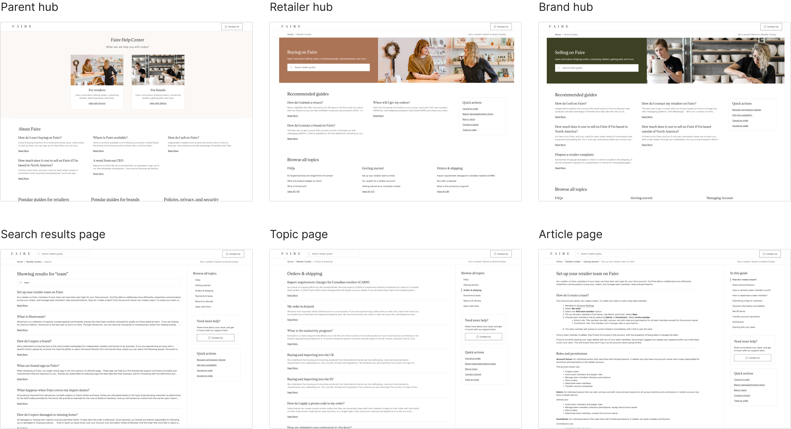
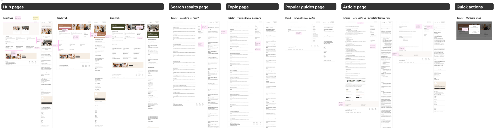
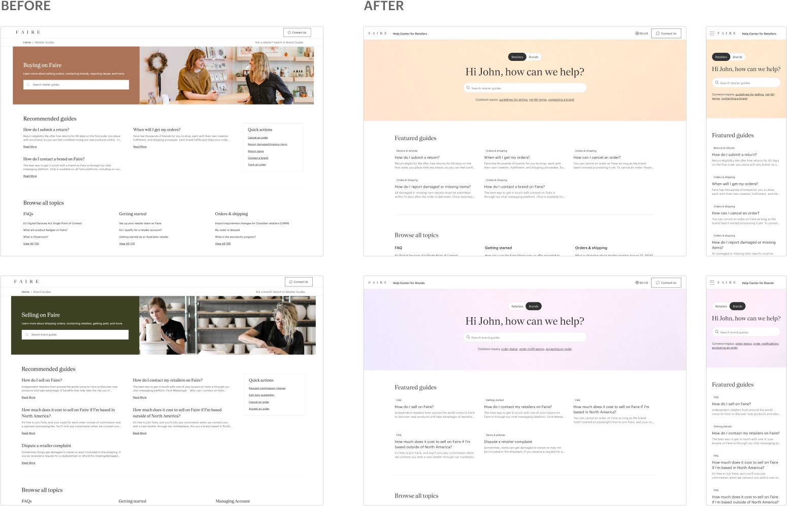
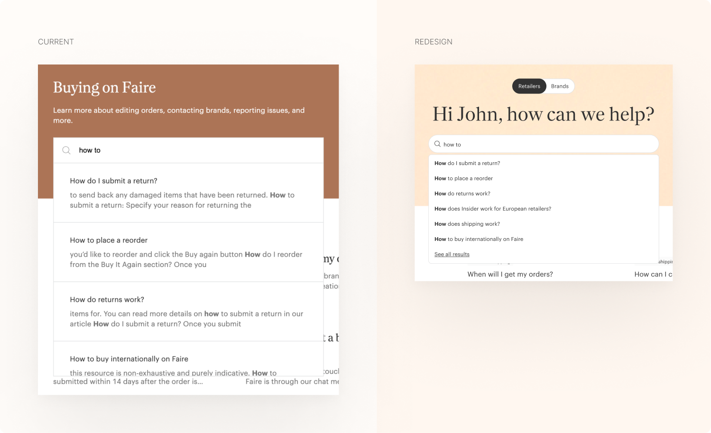
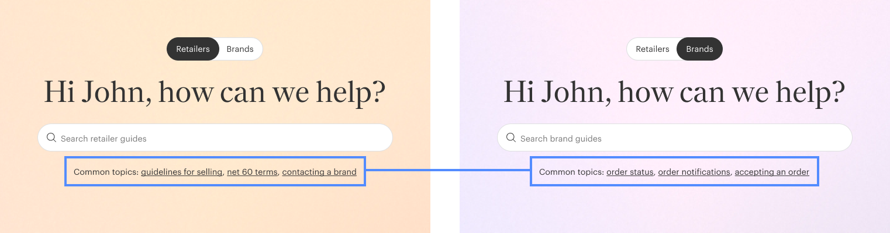
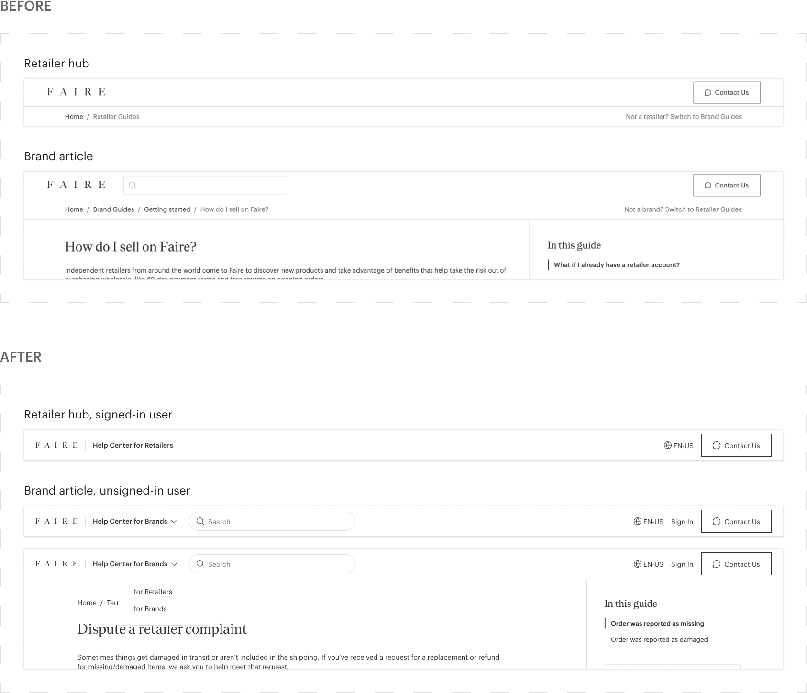
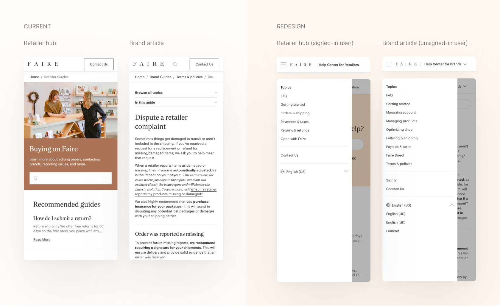
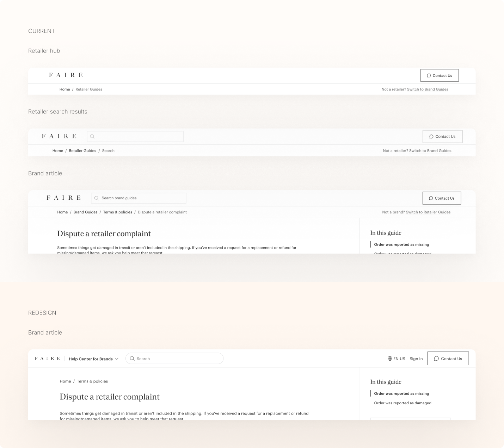
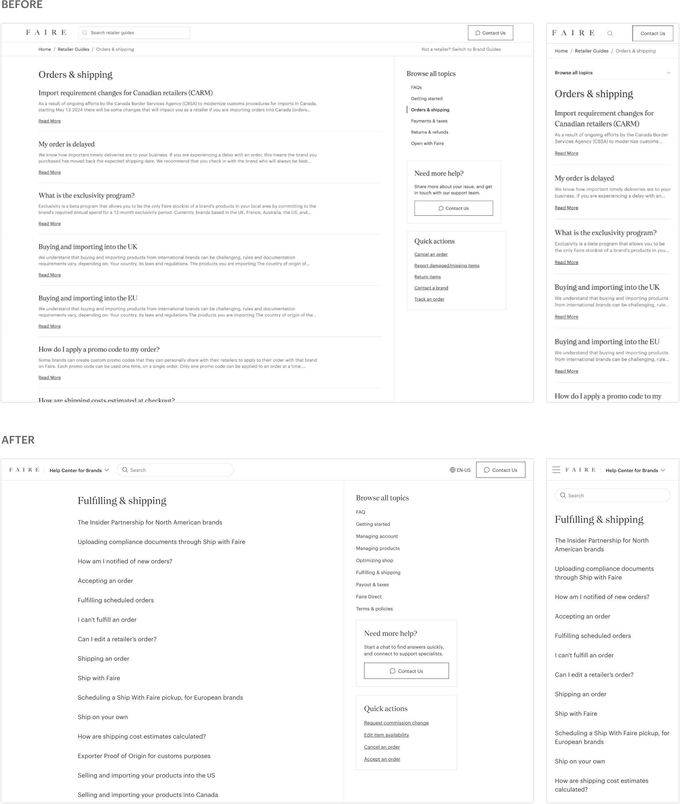

Context
Faire is a wholesale marketplace
that connects independent retailers with small brands—it makes it easy
for retailers to discover, purchase, and stock unique products for their
stores, while providing brands with a platform to reach a broader
audience without the need for a traditional sales force.
At Faire, cross-functional teams are grouped into pillars, which are
further divided into pods. I was part of the Support Experience pod,
under the Retailer Tools & Programs pillar. The mission of our pod was
to help customers with prompt and cost efficient support, and revamping
Faire’s Help Center was the main project I worked on during my
internship.
Motivation
With several projects on the Support Experience pod’s roadmap for H2
2024, all planned to be shipped by the end of the year, our top priority
(P0) was an AI support chatbot. Other key initiatives included a Help
Center content audit, a refresh of the support issue taxonomy, and the
standardization and improvement of CSAT collection. Given these upcoming
updates to Faire’s support ecosystem, updating the Help Center was
essential, especially since its last overhaul was over 4 years ago
(2020).
Improving the Help Center would be meaningful not just from a UI/UX
standpoint, but also serve as a strategic lever to reduce Contact Rate
(CR%) upstream of the self-serve tree. The Help Center already deflects
a significant portion of tickets—users who engage (e.g., search, read
articles, navigate beyond user hubs) are 30-65% less likely to enter the
self-serve flow and 15-25% less likely to create a self-serve ticket.
However, there’s still room for improvement—30% of users who attempt to
search or navigate still end up initiating the self-serve flow.
Current State
Today, the Help Center starts on a parent page, where users must select
between the Retailer hub or Brand hub—each has content scoped to the
specific needs and interests of its audience. Once a user arrives at one
of the hubs, they can search, browse by topic, read articles, or enter
the self-serve flow through the ‘Contact Us’ buttons located in the
header and sidebar.

UX Audit
To figure out what was and wasn’t working with our current Help Center,
I conducted a UX audit for both the desktop and mobile experiences.

To refine potential designs, I frequently collaborated with CX,
engineering, strategy & analytics, brand studio, and product designers
in the RTP pillar, engaging in regular jam and feedback sessions. With a
wide range of explorations, I will focus on the final design outcomes
and the key decisions behind them.
Final Design
Retailer and Brand hubs + removal of parent hub
To shorten visit durations, I removed the parent hub and now direct
unsigned-in users to the Retailer hub, as it has a significantly larger
user base (~700k retailers compared to ~150k brands). Signed-in users
will always default to the hub most relevant to them. I also added a hub
switcher/toggle at the top of the hero banner for a seamless transition
between the Retailer and Brand hubs, since the parent hub is no longer
available to complete this action. On non-hub pages, users can switch
between the Retailer and Brand sides using the chevron in the header.
Another major change was placing greater emphasis on search as the
primary CTA. This was achieved by centering and enlarging the search bar
and adding a greeting (personalized for signed-in users).

For the hero banner colors, I collaborated with our brand studio team to
determine the best combination, aiming to incorporate brighter colors
into the Help Center to create a sense of energy. Since the Help Center
is a functional surface, we chose light orange and purple gradients for
the Retailer and Brand sides respectively, ensuring they were visually
engaging while aligned with Faire's in-product color palette. Lastly, I
implemented several small quality-of-life improvements to the displayed
articles: adding topic tags, editing fonts for enhanced clarity, and
standardizing previously inconsistent hover states.
Key Changes
Removed the parent hub and start unsigned-in users at the Retailer hub
Added a hub switcher/toggle for a seamless transition between the
Retailer and Brand hubs
Greater emphasis on search as the primary CTA—large and centered
search bar
Final Design
Search results dropdown + common topics
In the current state, the search results dropdown used excessive space
by including out-of-context article snippets that highlighted keywords
from the user’s query. These snippets often started mid-sentence,
providing little to no useful context. Additionally, the dropdown
featured a scroll function that displayed every result, which felt
redundant since users could simply press 'enter' to see all results on a
larger screen view (search results page). In my redesign, I focused on
enhancing scannability by removing article snippets and instead
highlighting keywords within the actual article titles. The dropdown now
displays a maximum of six suggestions, along with a "See all results"
button that allows users to easily view the full list and prevents
unnecessary scrolling.

To further improve navigation, I introduced common topics just below the
search bar, providing quick links to curated articles. These articles
were specifically tailored for the Retailer and Brand hubs, selected by
analyzing a mix of the most popular and highest-rated content based on
CSAT scores. However, certain articles were intentionally excluded to
protect the Faire brand. For instance, while "Issue with my order
payout" was a popular topic, featuring it could discourage new users by
raising concerns about Faire's reliability as a platform.

Key Changes
Simplified the search results dropdown for better scannability
Added curated common topics, excluding articles that could harm brand
perception
Final Design
Header (desktop)
In the current state, the header is static and minimal, displaying only
the Faire logo, the "Contact Us" button, and a search bar on non-hub
pages. I improved the header by adding a divider and the text "Help
Center for Retailers/Brands" next to the Faire logo, providing users
with a clear understanding of their location within the Faire
ecosystem—this lockup is particularly important to prevent confusion for
users who arrive via SEO. Additionally, I added a language selector and
sign-in buttons, allowing users to perform these actions without needing
to return to the Retailer or Brand portals.

Additionally, the header is now fixed to the top and dynamically adjusts
based on the user's location in the Help Center—the type of page, scroll
depth, and sign-in status all affect which components appear in the
header. For example, scrolling past the primary search bar on hub pages
reveals a search bar in the header, and the chevron for switching
between hubs appears on non-hub pages.
Key Changes
Added a header lockup to improve clarity, especially for users
arriving from SEO
Added language selector and sign-in buttons, removing the need for
Retailer/Brand portal access to complete these actions
Header is now fixed and adjusts based on context, displaying relevant
components as needed
Final Design
Header (mobile)
While the header was minimal on desktop, it became cluttered on mobile,
especially on non-hub pages. The breadcrumb nav was crammed and prone to
cutting off as users navigated deeper into the Help Center.
Additionally, navigation menus on non-hub pages like "Browse all topics"
and "In this guide," which were sidebars on desktop, transformed into
dropdowns on mobile—these required additional clicks, and again,
contributed to an overcrowded top of page layout.

To address these issues, I separated the breadcrumb nav from the header
(detailed in the next section) and consolidated all the header
buttons—including the new language selector and sign-in buttons—into a
hamburger menu. Additionally, I relocated the topics browsing feature
into the same menu to reduce clutter on non-hub pages. By fixing the
header to the top of the page, users can now access the topics menu at
any location, regardless of their page or scroll depth. This change is a
key improvement over the previous design where users had to scroll back
to the top to browse topics.
Key Changes
Consolidated header elements into a hamburger menu for improved mobile
navigation
Relocated topics browsing feature into the hamburger menu to allow
access from any page
Header is now fixed, providing constant access to all actions in the
hamburger menu
Final Design
Breadcrumb nav + article page
In the current design, the breadcrumb nav is attached to the header and
appears on every page, which feels unnecessary, particularly on hub
pages, where users haven’t navigated yet. Some breadcrumbs are
especially awkward, such as the “Search” breadcrumb on the search
results page, since search is a global function and not part of a linear
navigation path (results vary depending on the query). The “Home”
breadcrumb, which is present on every single page and leads back to the
parent hub page, also felt redundant—data showed that users rarely
switch between hubs—and somewhat misleading. This was especially true
for signed-in users, where the Retailer and Brand hubs functioned better
as home pages, since they are the default Help Center landing pages for
their respective user type. Additionally, on article pages, the article
breadcrumb felt repetitive, appearing directly above the article title.

To improve clarity, I detached the breadcrumb nav from the header and
removed it from all pages except article pages. It's important to note
that on non-hub pages, the hub (home) pages and topic pages can always
be accessed through the header lockup and sidebar. For article pages, I
simplified the breadcrumb nav by removing the "Retailer/Brand Guides"
and article title breadcrumbs, leaving only the "Home" breadcrumb (which
now links back to the appropriate hub page) and the topic breadcrumb,
representing the topic to which the article belongs.
Key Changes
Removed unecessary breadcrumb navs from hub and certain non-hub pages
to reduce clutter
Edited and simplified breadcrumbs on article pages to show only
essential links
Final Design
Search results page
In the current state, the search results page is cluttered with
repetitive elements, specifically the same ‘Read more’ links and
dividers for each article. This is especially problematic on mobile,
where it leads to excessive scrolling. Additionally, users can only
click the 'Read more' link to navigate to an article, which feels
limiting and requires precise interaction with the mouse or touch input.

I streamlined the search results page by removing unnecessary elements
and incorporating topic tags for better context on each article, reusing
the article component developed for the hub pages. Keyword highlights
were added to make scanning for relevant results easier, and now the
entire article container is clickable, making navigation less strict. I
also introduced a hover state for the article container, which did not
exist in the previous design, providing users with clearer visual
feedback. Additionally, I made a small QoL improvement by displaying the
total number of search results and implementing pagination to improve
load times and reduce excessive scrolling.
Key Changes
Removed repetitive article elements for a cleaner interface and
optimized space
Made the entire article container clickable and added hover states for
better feedback
Added topic tags and keyword highlights for quicker result
identification
Final Design
Topic page
The current state of the topics page closely resembled the search
results page, featuring the same article component that included a
title, snippet, 'Read more' link, and divider. I simplified the page by
displaying only the article titles. This change made sense because users
navigating to a topic page typically have a clear idea of what they’re
looking for, making the snippets less necessary. By removing the
snippets and 'Read more' links and making the article titles the
clickable links, I reduced visual clutter and optimized space on the
page. This streamlined layout not only improved scannability but also
minimized excessive scrolling, especially on mobile devices where these
issues are emphasized.

Key Changes
Removed repetitive article elements for a cleaner interface and
optimized space
Display only article titles for quick content identification and
reduced scrolling
A/B Testing
After finalizing the designs, our engineer implemented them on staging,
and I conducted several rounds of QA, creating JIRA tickets for any
issues identified. Once the build was finalized, we proceeded with the
experiments for both Retailers and Brands.
For the Retailer experiment, which targeted logged-in users across all
geographies, we bucketed when they visit the Help Center home page. This
approach was essential due to the significant change of removing the
parent hub. The experiment utilized a 50/50 testing split among users
and required ~78K samples, with an estimated total duration of 3 months,
incorporating 1 month for samples to cure. A 3.5% minimum detectable
effect (MDE) was established at a 90% confidence level. The treatment
variant included all the design changes, excluding the updated article
components on hub pages. The control variant featured no changes.
Similarly, the Brand experiment focused solely on logged-in users, with
a 100% treatment group. Like the Retailer XP, this experiment bucketed
at the Help Center home page and required ~21K samples over an estimated
4.5 months, with a 5% MDE at 80% confidence. The treatment variant also
featured all design changes, and both experiments adhered to a "Do No
Harm" principle, ensuring that the updates would not negatively impact
customer experience (CX) metrics.
Metrics & Guardrails
Primary Metric — F30D CX Retailer/Brand
Zendesk tickets created
Secondary Metrics — F30D HC article
visits and F30D HC searches
Guardrails — F30D GMV and F30D Brand
orders
Results
As the experiment is still ongoing, continuous monitoring will be needed
to assess the effectiveness of the Help Center revamp. Early
observations indicated promising improvements, with metrics reflecting
an estimated 7.2% increase in user engagement with Help Center articles
for Retailers and a 6.5% increase for Brands. Additionally, there was a
6.3% reduction in Zendesk tickets created for Retailers, while Brands
saw a 5.4% decrease. In terms of search completions, Retailers
experienced a 7.4% improvement, whereas Brands noted a 5.8% increase.
In addition to monitoring the experiment, it’s important to update the
Help Center alongside the broader Support Experience initiatives that
are in the pipeline. As mentioned earlier, the Support Experience pod
plans to roll out an AI support chatbot, conduct a comprehensive content
audit for the Help Center, refresh the support issue taxonomy, and
standardize CSAT collection. Aligning the Help Center updates with these
initiatives (once they're implemented) will ensure a cohesive and
consistent user experience across Faire's support ecosystem.
Lessons Learned
I’m really glad I had the opportunity to lead the Help Center revamp—it
was incredibly fulfilling to influence nearly every aspect and take on a
scope much larger than I initially expected. This experience taught me
to balance broad project ownership while still focusing on the finer
design details. Working closely with the engineering and strategy teams
highlighted how important it is to bring together different perspectives
and data-driven insights in decision-making, all while keeping
feasibility and time constraints in mind. This was also my first time
conducting formal QAs on staging builds, and communicating with the
engineering team was super useful to ensure we were all on the same
page.
A key takeaway for me is the importance of setting context specific for
different audiences—it's vital to understand key differences in working
and communicating with collaborators versus decision makers to keep
projects moving efficiently.
Jess Brown | Staff
Product Designer at Faire, ex-Director of UX at VICE Media
"Chris exceeded expectations in this internship, by taking on
substantial projects, working efficiently and often independently,
and delivering high quality designs. He led a redesign for Faire’s
Help Center, including improving visual hierarchy, better
signposting, and offering more robust navigation options to support
wayfinding. In his design process, Chris efficiently explored
solutions, collaborated to narrow down, uncovered new requirements,
and created clear handoff documentation. He also worked well with
engineering—creating tickets, and offering detailed QA on builds.
The final implementation represents a meaningful improvement to an
essential part of Faire's platform."
Ryan Lee | Product Design
Director at Faire, ex-Design Manager at Airbnb, Meta,
Microsoft
"Chris!!! I can’t believe you basically redesigned our entire Help
Center during your term here. Super impressed with the work and it's
going to be a dope portfolio piece for you! It was also great to
hang out in SF with you during Config!"
Marina Liu | Staff
Product Designer at Faire, ex-Senior Product Designer at Uber
"Chris!!! It’s wild how much you’ve accomplished within such a short
amount of time—you literally redesigned our entire Help Center NBD.
You should be super proud of all the work you’ve done at Faire.
Thanks for bringing such a cool vibe to our team!"
Grace Duan | Strategy &
Analytics at Faire, ex-Product Strategy Lead at Meta
"Chris—thank you for all your awesome work on Support Experience!
Loved having you on the team and learning about Help Center best
practices from other companies. So excited for the Help Center
search & navigation revamp we just launched!"